gsave と grestore の演算子を用意しています。それは、 PostScript に似て、現在の描画エンジンをスタックに push/pop するのです。これは、図形の表現情報の他に、現在の座標変換を含みます。そこで、現在の座標系を gsave()....grestore() で封じ込めるかも知れません。まず、初めに演算子を紹介し、それから例を示します。translate(<list>)rotate(<real>)<real> の角だけ座標系を回転します。角は弧度法です。度数法で与えたい場合は ° 演算子を使います。この演算子は、その数に pi/180 を掛けます。したがって、 rotate(30°) とすれば、座標系を 30° 回転します。scale(<real>)<real> によって、拡大・縮小を行います。[0,0],[0,1],[1,1],[1,0] である正方形を描く前に、座標変換をしたときの効果を示します。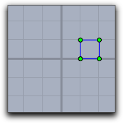 | 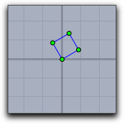 | 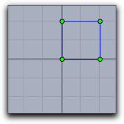 | |
translate([1,0]); | rotate(30°); | scale(2));
| |
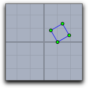 | 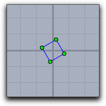 | 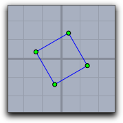 | |
translate([1,0]); | rotate(30°); | rotate(30°);
| |
square は一つの正方形を描くためのリストとします)repeat(90, drawall(square); translate((1,1)); scale(0.92); rotate(30°); )
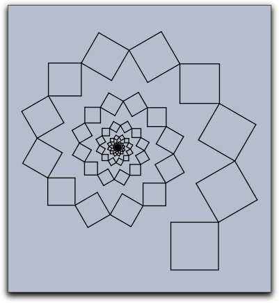 |
setbasis(<basis>)setbasis() 演算子はシンデレラで使われる基底を定義します。引数はシンデレラで使われる基底のラベルでなければなりません。 setbasis 演算子を適用したあとは、CindyScript の以前の座標変換は使われなくなります。しかし、それらは gsave で保存しておき、 grestore で呼び出すことができます。Bas0 は点A,B,C,Dによって定められる射影基底です。これは、一辺の長さが１である正方形(単位正方形)の４頂点 [0,0],[0,1],[1,1],[1,0] が、点 A,B,C,D に対応するような基底であることを意味します。コードの１行目が基底変換です。次の３つの行は、単位正方形内の格子を描きます。結果の図はその後に示されています。setbasis(Bas0); x=(0..10)/10; drawall(apply(x,([#,0],[#,1]))); drawall(apply(x,([0,#],[1,#])));
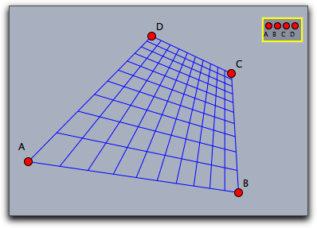 |
setbasis(<vec1>)setbasis(<vec1>,<vec2>)setbasis(<vec1>,<vec2>,<vec3>)setbasis(<vec1>,<vec2>,<vec3>,<vec4>)sq の部分は正方形の格子を描く関数の定義です。この格子をいろいろな基底によって描きます。
sq:=(draw([0,0],[1,0]);
draw([0,0.25],[1,0.25]);
draw([0,0.5],[1,0.5]);
draw([0,0.75],[1,0.75]);
draw([0,1],[1,1]);
draw([0,0],[0,1]);
draw([0.25,0],[0.25,1]);
draw([0.5,0],[0.5,1]);
draw([0.75,0],[0.75,1]);
draw([1,0],[1,1]));
setbasis(A);
sq;
setbasis(B,C);
sq;
setbasis(D,E,F);
sq;
setbasis(G,H,L,K);
sq;
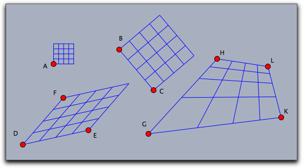 |
gsave 演算子は、すべての図形の状態(座標変換、大きさ、色、透明度)についての情報をスタックに保存します。 grestore はこの情報をスタックから引き出します。したがって、 gsave() ..... grestore() の間は、他のコードの部分に影響を与えることがありません。gsave()grestore()greset()layer(<int>)cir(x,y):=( fillcircle((x,y),3,color->(1,.8,0)); drawcircle((x,y),3,color->(0,0,0),size->3); ); cir(0,0); cir(1,1); cir(2,2); cir(3,3)
cir(x,y):=( fillcircle((x,y),3,color->(1,.8,0)); drawcircle((x,y),3,color->(0,0,0),size->3); ); layer(6); cir(0,0); layer(5); cir(1,1); layer(4); cir(2,2); layer(3); cir(3,3)
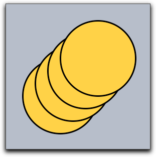 | 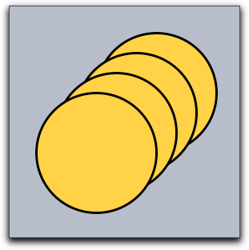 |
| 通常の描画 | 逆順にレイヤーで描画 |
clearlayer(<int>)clrscr()repaint()関数が呼ばれているときに必要になるでしょう。autoclearlayer(<int>,<boolean>)falseにすることでこれを切り替えることができます。autoclearlayer(-4,false); layer(-4); repeat(1000, p = [random(20)-5,random(20)-5]; color([random(),random(),random()]); fillpolygon(apply([[0,0],[1,0],[1,1],[0,1]],p+#),alpha->.2); ); layer(0);
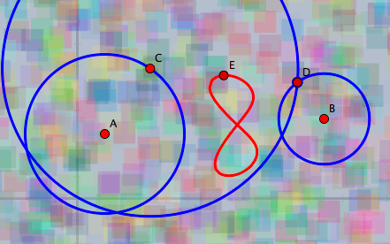 |
| A random background |
screenbounds()screenresolution()[0,1]間の画素数を与えます。同じ図に対していくつかのユークリッド表示があるとき、この関数はすべての画面解像度の最大値を返します。colorplot 関数 が使いやすく、より高速です。upperleft=(screenbounds()_1).xy; lowerright=(screenbounds()_3).xy; width in pixels=screenresolution()*(lowerright.x-upperleft.x); height in pixels=screenresolution()*(upperleft.y-lowerright.y); repeat(width in pixels/2, x, start->upperleft.x, stop->lowerright.x, repeat(height in pixels/2, y, start->upperleft.y, stop->lowerright.y, draw((x,y),border->false,size->.5,color->[0,0,0]); ) )
Page last modified on Saturday 19 of July, 2014 [12:54:22 UTC].
The original document is available at
http://doc.cinderella.de/tiki-index.php?page=Script%20Coordinate%20SystemJ